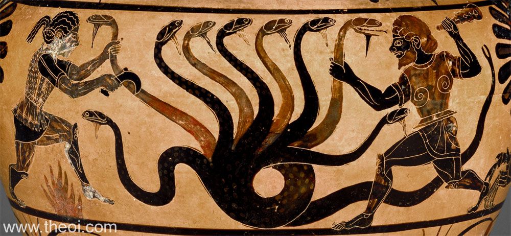
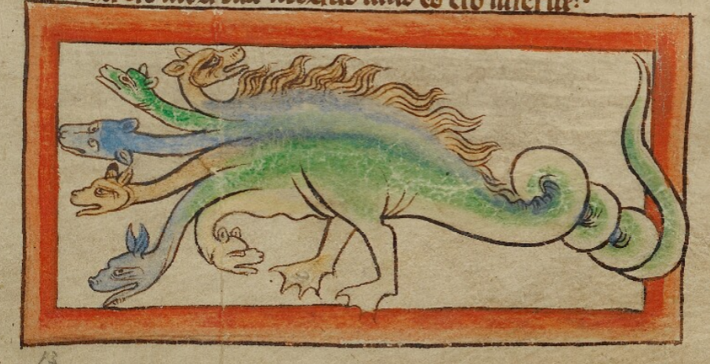

Le mythe en bref


Euripide, Héraclès furieux, v. 419-420
μυριόκρανος πολύφονος κύων
« Chienne aux mille têtes, avide de sang »

Influences orientales


Prototypes orientaux du mythe
L'iconographie antique
Plus anciennes représentations : fibules béotiennes en bronze (~VIIIe s. av. J.-C.)
Évolution des armes : épée → faucille/serpe → massue → arc → tison
Amphore attique de Tarquinia, 560-540 av. J.-C.
Amphore de Tarquinia, 560-540 av. J.-C.
Louvre CA 598, VIe s. av. J.-C.

Nationalmuseet, Copenhague
Hydrie cérétaine


Tous les éléments du mythe en une image

Mosaïque romaine, IIIe s. ap. J.-C., Liria (Valence, Espagne), Musée archéologique national, Madrid
Mosaïque d'Hercule, l'Hydre de Lerne, 170-180 ap. J.-C., Saint-Paul-lès-Romans (Drôme)
Enluminure médiévale

L'Hydre devient le Mal absolu
Moyen Âge : bestiaires et théologie


Antonio del Pollaiuolo, Ercole e l'Idra

Retour à l'antique, Hercule humaniste
Andrea Alciato, Emblematum Liber — emblème 136

1550 — têtes de serpent
Édition latine, Lyon, 1550 (Pierre Eskrich)

1615 — têtes humanoïdes
Édition espagnole, Nájera, 1615
En 65 ans, le monstre mythique devient une figure allégorique explicitement moralisée
« Par Hercules est signifiée vertueuse eloquence avec sagesse »
Barthélemy Aneau, traduction française, 1558
Diffusion du motif

École italienne, fontaine de bronze, XVIe s., Louvre
L'eau jaillit des têtes : retour à l'origine aquatique

Francisco de Zurbarán, Hercule combat l'Hydre, 1634, Prado, Madrid
Hercule = pouvoir royal espagnol
Henri IV en Hercule terrassant l'Hydre

Premier roi à retourner le symbole
Pierre Puget, Hercule terrassant l'Hydre de Lerne

Hercule = le Roi (Louis XIV)


LA MÉTAPHORE RETOURNÉE

L'Hydre aristocratique, 1789 (Gallica, BnF)
Peuple = Hercule / Aristocratie = Hydre

Becquet, L'Hydre de l'Anarchie, ~1830 (Musée Carnavalet, G.45138)
Pouvoir = Hercule / Peuple révolté = Hydre
Gustave Moreau, Hercule et l'Hydre de Lerne

La tête immortelle = menace permanente
La fausse Hydre de Hambourg

Spécimen taxidermisé à 7 têtes
Abraham Trembley (1744)

Recréation de la créature de Lerne en laboratoire

Johannes Hevelius, Uranographia, 1690 — La constellation Hydra
La plus grande des 88 constellations modernes
Comparaison interculturelle : le Xiangliu chinois
| Hydre | Xiangliu | |
|---|---|---|
| Apparence | 9 têtes de dragon | 9 visages humains |
| Régénération | Oui | Non |
| Lien à l'eau | Marais de Lerne | Dieu de l'eau (Gonggong) |
| Héros | Héraklès | Dayu |
| Venin | Oui | Oui (sang empoisonne la terre) |

Le Xiangliu, Shanhaijing